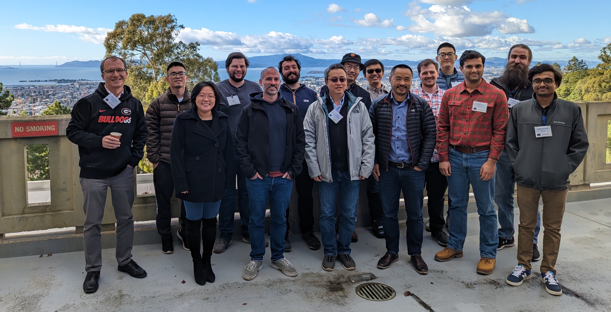
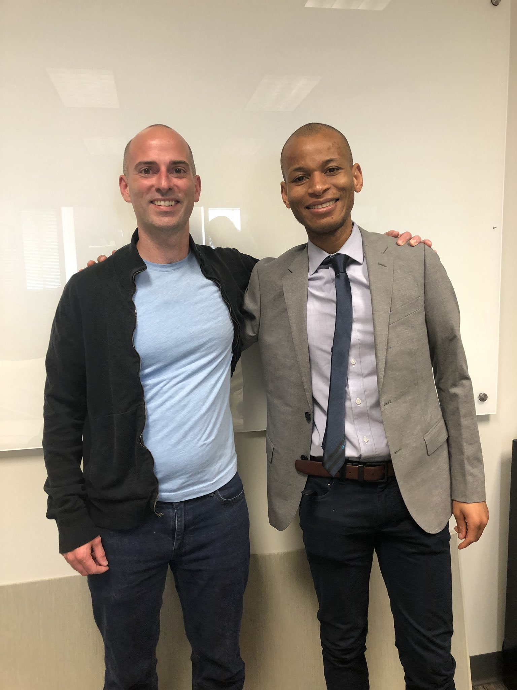

Photos
Herty Medal Symposium for David Sherrill at SERMACS 2024 in Atlanta, GA, October 2024
DePrince Group, past and present, at SERMACS 2024 in Atlanta, GA, October 2024
 DePrince Group at SETCA 2023 at VT, May 2024
DePrince Group at SETCA 2023 at VT, May 2024
 SciDAC team summit, December 4-5, 2023, Florida State University
SciDAC team summit, December 4-5, 2023, Florida State University
 DePrince Group, Fall 2023
DePrince Group, Fall 2023
DePrince Group, Halloween, 2023
DePrince Group, Summer 2023
DePrince Group at SETCA 2023 at USC, May 2023

SciDAC team summit, December 12-13, 2022, Lawrence Berkeley National Laboratory
Brandon Cooper, Ph.D., at his hooding ceremony, December 2022
DePrince Group, Fall 2022
Impromptu Sherrill Group Reunion, ACS, Fall 2022
 DePrince Group, Spring 2021
DePrince Group, Spring 2021
DePrince Group, Fall 2020
DePrince Group, Spring 2020
 DePrince Group, Fall 2019
DePrince Group, Fall 2019

Elvis Maradzike defends his Ph.D., July 2019
DePrince Group, Summer 2019
Eugene doing very serious science, May 2019
Farewell dinner for Danny Gibney, May 2019
Danny Gibney doing very serious science, May 2019
Stephen Gray, February 2019
Kasia Pernal, Kroto Lecture, November 2018
 Farewell lunch for Wayne Mullinax, October 2018
Farewell lunch for Wayne Mullinax, October 2018
 DePrince Group, Fall 2018
DePrince Group, Fall 2018
 DePrince Group, Summer 2018
DePrince Group, Summer 2018
Jack Saltiel wins the Josef Michl Award in Photochemistry, ACS, New Orleans, March 2018
Daniel Nascimento, Ph.D., December 2017
Greg Gidofalvi visiting FSU, October 2017
 DePrince Group, Fall 2017
DePrince Group, Fall 2017
 DePrince Group, Summer 2017
DePrince Group, Summer 2017
Eugene, Elvis, Sina, and Daniel at the March for Science, Tallahassee, April 2017
Christine Aikens, Kroto Lecture, March 6, 2017
 DePrince Group, Fall 2016
DePrince Group, Fall 2016
DePrince Group, Spring 2016
SETCA 2016 attendees at FSU
 Todd Martinez, Kroto Lecture, April 19, 2016
Todd Martinez, Kroto Lecture, April 19, 2016